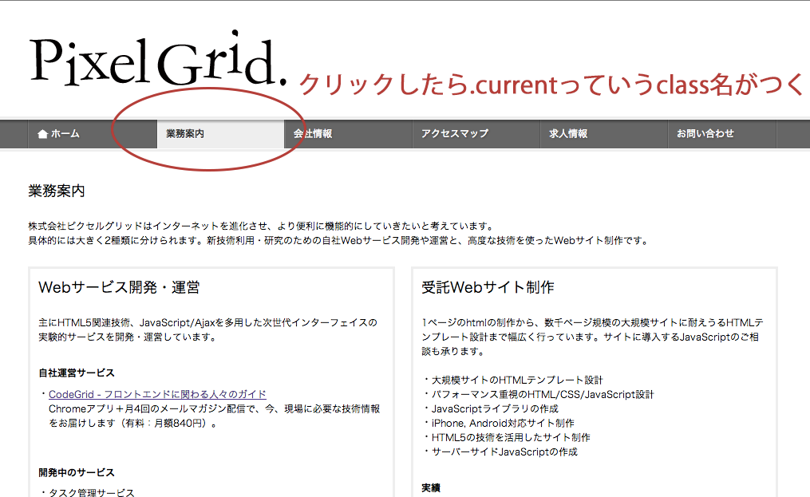
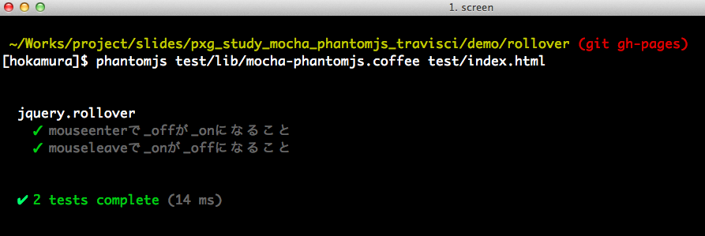

JavaScriptの自動テスト
2012.10.23
社内勉強会
自動テストとはなんぞや
- リポジトリにpushしたら勝手にテストしてくれて
- テストが失敗したら通知して教えてくれたりするやつ
なぜ自動テストが必要か
- ブラウザでリロードすればすぐテストできるし
- テスト落ちるてるのとかすぐわかるじゃん
テストが増えた時実行
するのが大変になるから
（他にも理由あるけど）
が、世の中の自動テストツールは
コマンドラインから実行
するテストが前提であるorz
そこでこいつの出番

PhantomJSたん
phantomJSの例
// fetch_pxgrid_member.js
var webpage = require('webpage');
var page = webpage.create();
page.onConsoleMessage = function(msg) {
console.log(msg);
};
page.open('http://www.pxgrid.com/', function(status) {
page.evaluate(function() {
$('.mod-staffs h3').each(function() {
console.log($(this).text());
});
});
phantom.exit();
});phantomJSの例
phantomjsコマンドでスクリプトを実行
$ phantomjs fetch_pxgrid_member.js
中村 享介（なかむら きょうすけ）
高津戸 壮（たかつど たけし）
小山田 晃浩（おやまだ あきひろ）
外村 和仁（ほかむら かずひと）
外村 奈津子（そとむら なつこ）
德田 和規（とくだ かずのり）でもこれくらいだったら他の
スクレイピングツールでできるよ

JavaScript実行できちゃう
// fetch_pxgrid_menu.js
...
page.open('http://www.pxgrid.com/', function(status) {
page.evaluate(function() {
console.log($('nav .current').text()); //=> ホーム
$('a[href=#service]').click();
setTimeout(function() {
console.log($('nav .current').text()); //=> 業務案内
}, 1000);
});
});関係ないけどキャプチャもとれちゃう
// fetch_pxgrid_menu.js
var webpage = require('webpage');
var page = webpage.create();
page.open('http://www.pxgrid.com/#corporate', function(status) {
page.render('capture.png');
phantom.exit();
});さすがphantomJS！おれたちに（ｒｙ
とあるjQueryのプラグイン
$.fn.rollover = function() {
return this.each(function() {
var $img = $(this);
var src = $img.attr('src');
var src_on = src.replace(/_off\.(\w+)$/, '_on.$1');
$img.bind('mouseenter', function() {
$img.attr('src', src_on);
});
$img.bind('mouseleave',function() {
$img.attr('src', src);
});
});
};mochaでテストを書いてみる
describe('jquery.rollover', function() {
var $img;
var off = '../example/menu01_off.png';
var on = '../example/menu01_on.png';
beforeEach(function() {
$img = $('<img>').attr('src', off).rollover();
expect($img.attr('src')).to.be(off);
});
it('mouseenterで_offが_onになること', function() {
$img.trigger('mouseenter');
expect($img.attr('src')).to.be(on);
});
it('mouseleaveで_onが_offになること', function() {
$img.trigger('mouseenter');
expect($img.attr('src')).to.be(on);
$img.trigger('mouseleave');
expect($img.attr('src')).to.be(off);
});
});ブラウザで実行してみる
phantomJSで実行してみる

mocha-phantomjs.coffee
- mochaのテストをphantomJSでいい感じに実行できるようにしてくれるやつ
- 自分で書こうと思ったけどめんどかったのでこれ使うのがいいです
travis-ciで実行してみる
以下のYAMLを.travis.ymlという名前でgithubのリポジトリにおいてpushするだけ
script: phantomjs test/lib/mocha-phantomjs.coffee test/index.htmlまとめ
- phantomJSはズキューンな感じでしびれるしあこがれる
- travis-ciは簡単すぎてワロスという感じ
- JavaScriptの自動テストは今の時代そこまで難しくない